CM1
2632 fiches en français pour le niveau CM1, prêtes à imprimer et avec corrigé.
2.632 ressources
Thème

Animal – Fiche : texte à trous, compréhension orale et mots mêlés

Ader – Fiche : texte à trous, compréhension orale et mots mêlés

Guerre de Trente Ans – Fiche : texte à trous, compréhension orale et mots mêlés

Chocolat – Fiche : texte à trous, compréhension orale et mots mêlés

Chinchillidae – Fiche : texte à trous, compréhension orale et mots mêlés

Cartilage – Fiche : texte à trous, compréhension orale et mots mêlés

Bosphore – Fiche : texte à trous, compréhension orale et mots mêlés

Antoine de Saint-Exupéry – Fiche : texte à trous, compréhension orale et mots mêlés
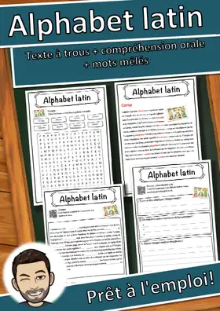
Alphabet latin – Fiche : texte à trous, compréhension orale et mots mêlés
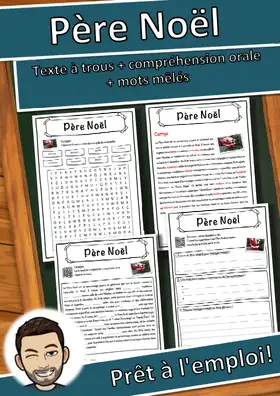
Père Noël – Fiche : texte à trous, compréhension orale et mots mêlés

Jean-Jacques Rousseau – Fiche : texte à trous, compréhension orale et mots mêlés

Isaac Newton – Fiche : texte à trous, compréhension orale et mots mêlés

Konrad Adenauer – Fiche : texte à trous, compréhension orale et mots mêlés

Koala – Fiche : texte à trous, compréhension orale et mots mêlés

Kinshasa – Fiche : texte à trous, compréhension orale et mots mêlés

Îles Malouines – Fiche : texte à trous, compréhension orale et mots mêlés
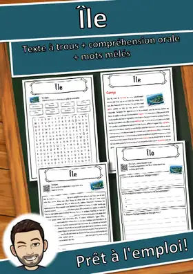
Île – Fiche : texte à trous, compréhension orale et mots mêlés

Étoile de mer – Fiche : texte à trous, compréhension orale et mots mêlés

Énergie nucléaire – Fiche : texte à trous, compréhension orale et mots mêlés
Éducation – Fiche : texte à trous, compréhension orale et mots mêlés
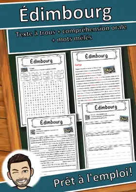
Édimbourg – Fiche : texte à trous, compréhension orale et mots mêlés
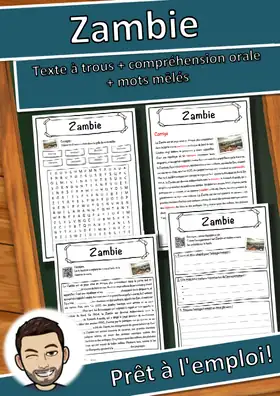
Zambie – Fiche : texte à trous, compréhension orale et mots mêlés
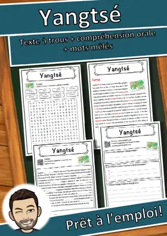
Yangtsé – Fiche : texte à trous, compréhension orale et mots mêlés
Vétérinaire – Fiche : texte à trous, compréhension orale et mots mêlés
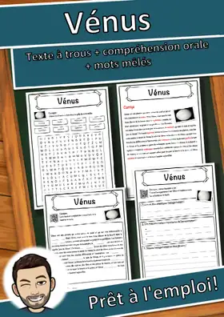
Vénus – Fiche : texte à trous, compréhension orale et mots mêlés
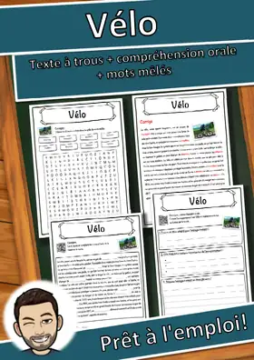
Vélo – Fiche : texte à trous, compréhension orale et mots mêlés
Véganisme – Fiche : texte à trous, compréhension orale et mots mêlés
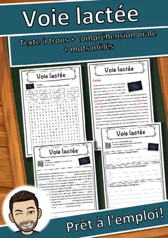
Voie lactée – Fiche : texte à trous, compréhension orale et mots mêlés
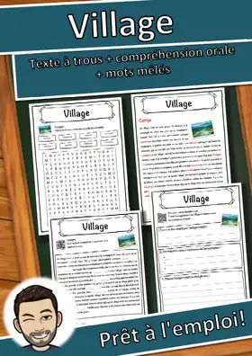
Village – Fiche : texte à trous, compréhension orale et mots mêlés
Viande – Fiche : texte à trous, compréhension orale et mots mêlés
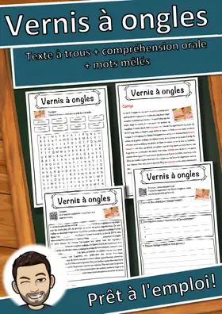
Vernis à ongles – Fiche : texte à trous, compréhension orale et mots mêlés
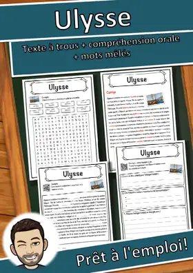
Ulysse – Fiche : texte à trous, compréhension orale et mots mêlés
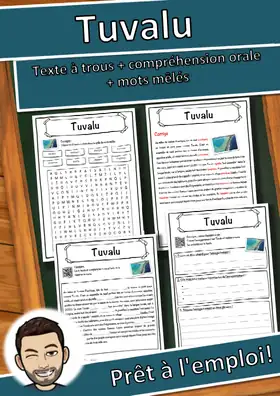
Tuvalu – Fiche : texte à trous, compréhension orale et mots mêlés
Turquie – Fiche : texte à trous, compréhension orale et mots mêlés
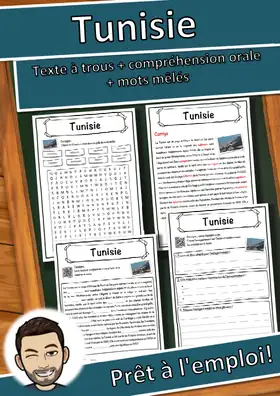
Tunisie – Fiche : texte à trous, compréhension orale et mots mêlés
Tourisme – Fiche : texte à trous, compréhension orale et mots mêlés
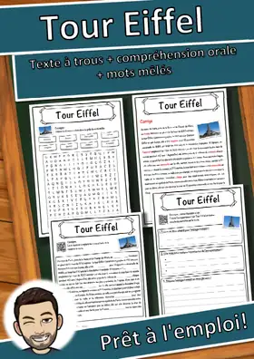
Tour Eiffel – Fiche : texte à trous, compréhension orale et mots mêlés
Toundra – Fiche : texte à trous, compréhension orale et mots mêlés
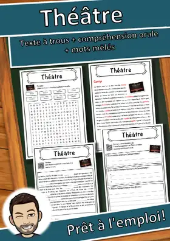
Théâtre – Fiche : texte à trous, compréhension orale et mots mêlés
Thaïlande – Fiche : texte à trous, compréhension orale et mots mêlés
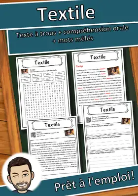
Textile – Fiche : texte à trous, compréhension orale et mots mêlés
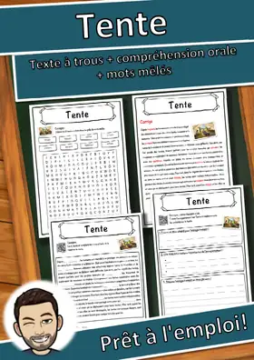
Tente – Fiche : texte à trous, compréhension orale et mots mêlés
Tempête – Fiche : texte à trous, compréhension orale et mots mêlés
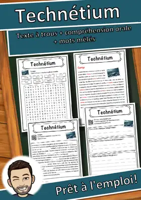
Technétium – Fiche : texte à trous, compréhension orale et mots mêlés
Tchétchénie – Fiche : texte à trous, compréhension orale et mots mêlés
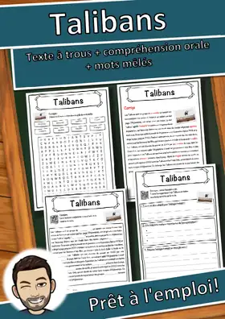
Talibans – Fiche : texte à trous, compréhension orale et mots mêlés
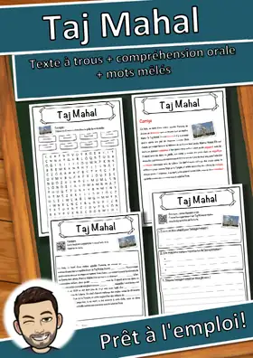
Taj Mahal – Fiche : texte à trous, compréhension orale et mots mêlés

Séisme – Fiche : texte à trous, compréhension orale et mots mêlés
Aucune ressource trouvée – essaie un autre mot ou un autre filtre.